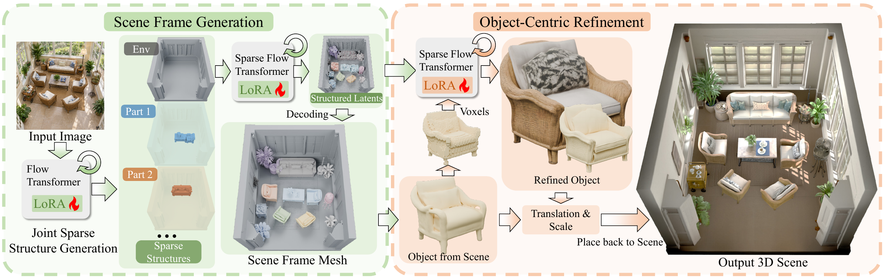

Left: an overview of the complete self-distillation process. Right: the data curation stage. We adopt Trellis.2 as the object generator from which training data are distilled. A VLM first generates descriptions of 3D assets, including objects and environments; these descriptions are then used to generate the corresponding input images for Trellis.2. After obtaining the 3D assets, we place them into the generated environments with physics checks and render conditioning images for each scene.

Left: the environment and objects are jointly generated in a shared scene frame through two stages, sparse structure generation and geometry-latent generation. Right: each generated object is transformed to a local voxel support for scene-conditioned refinement and then placed back into the scene using the inverse transformation.